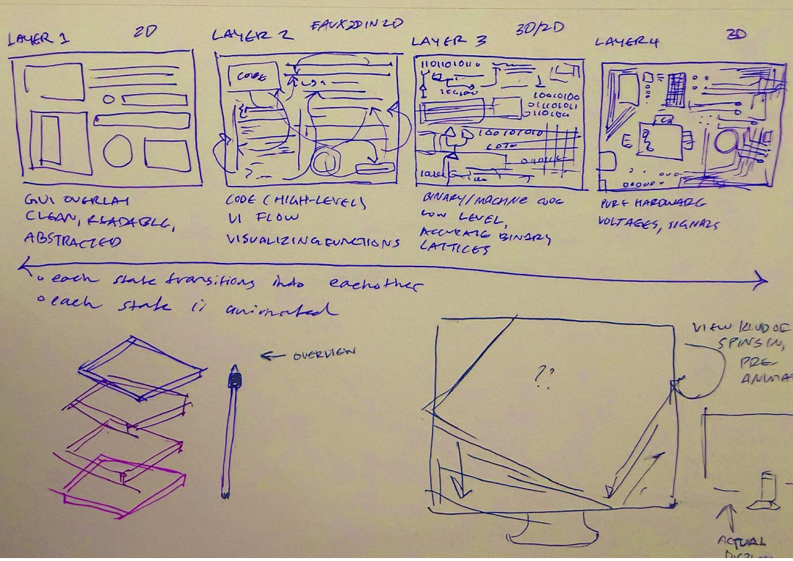
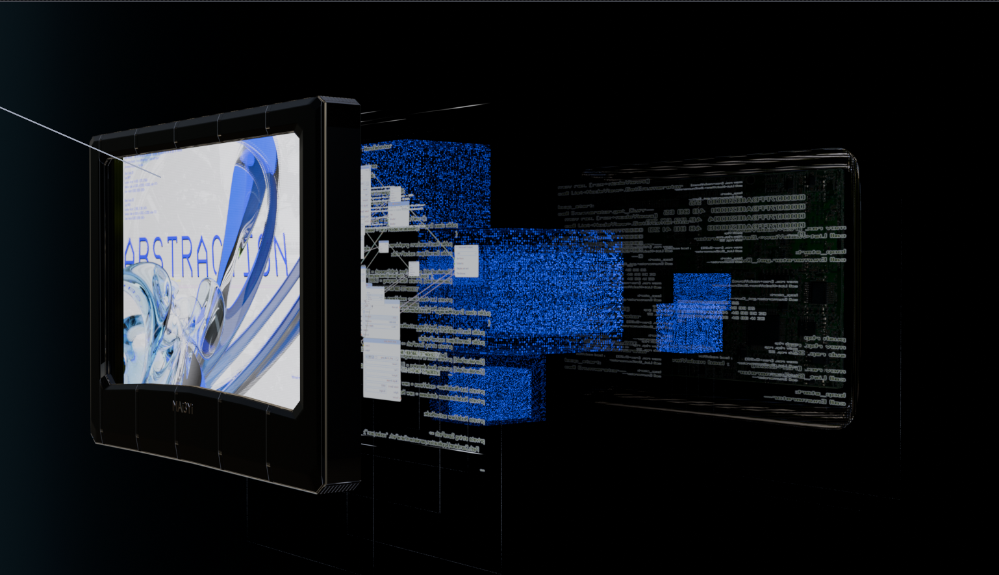
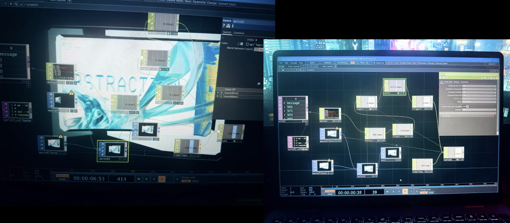

Abstraction is an interactive installation that visualizes the layered structure of digital computing systems as a single continuous 3D animation.
This project visualizes the layers of abstraction that exist within digital computing systems.
Although users interact primarily with graphical interfaces, those interfaces sit on top of multiple
hidden layers including high-level code, machine instructions, and physical hardware, resulting in
less cognitive load at the cost of deep understanding and complexity.
The piece moves through four levels of computation, represented visually as physical hardware (a modeled PCB), binary/machine code, high-level programming language, and a graphical interface. It was rendered in Blender and composited in After Effects, and the interaction was designed in TD. A physical potentiometer connected via a Xiao RP2350, which was chosen due to its small size, runs code written in the Arduino IDE to TouchDesigner through Serial. This allows the viewer to scrub through the animation timeline in real time, controlling the rate and direction of transition between layers. .
I started by blocking out my concept in blender and doing a test animation to ensure the overall structure. Then, I modelled and rendered an abstract shape over a composition that I made in photoshop as the main screen. I imported it as an image texture on the first plane. Similarly, I made several assets in photoshop and composited them onto the blockout before detailing. I then added finer details and made sure it was visually well represented. I rendered two animations; one for when the slider stayed at frame 0 for more than a second, and one for when the slider was turned. I used a switch in TD in order to use the serial values as reference points for each video to play. Then, I wired a potentiometer and connected it. Finally, I projected the project onto a screen and placed the potentiometer near it.
The main constraint for this project, or at least the biggest challenge I faced, was the jittery serial values coming out through the potentiometer. Even though I placed a filter node in order to reduce the lag, it didn't work as seamlessly as I'd have liked it to. As a result, the frames had a slight jitter to them, even when still. However, it was perhaps to the piece's benefit-I feel it would have looked dead, or like a still image that wasn't meant to be interaced with, without any movement.


